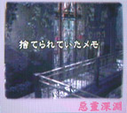

|
惡靈古堡GC復刻板-----File資料
|
此網頁包含櫻花輸入法，如無請按此下載(站內下載)
| 遊戲指南ияユ⑦ヲсЯшヤю |
基本裝備 洋館二樓西側走廊 / 第一次取得緊急迴避道具時 |
| Kenneth的錄影帶ンбЗソиュюу | 洋館一樓西側走廊Kenneth屍體上 |
| 詛咒之書咒ゆソ書 | 洋館地下一樓墓室 |
| Trevor的筆記Ья⑧ャみソ手記 |
洋館一樓西側酒吧 / 洋館一樓東側墓碑 洋館一樓東側休息室 |
| 被丟掉的筆記捨サヘホサゆギфх | 洋館二樓東側閱讀室 |
| 植物學 | 洋館二樓東側閱讀室 |
| 有關屍體處理的注意事項死体處理ズ關エペ諸注意 | 洋館一樓東側置物間 or 西側保管室 |
| 飼育員的日誌飼育係ソ日誌 | 洋館一樓西側飼育員寢室 |
| 某研究員的遺書やペ研究員ソ遺書 | 洋館二樓東側研究室 |
| 保安部長的信保安部長ソфみю | 洋館二樓西側收藏室 |
| 某自殺者的遺書やペ自殺者ソ遺書 | 寄宿舍001號房 |
| 植物42號的筆記иь⑦Ь42ソфх | 寄宿舍002號房 |
| 有機化學實驗檔案有機化學實驗иャユю | 寄宿舍003號房 |
| 某個家庭的照片やペ家族ソ写真 | 中庭小屋 / 中庭地下二樓起居室 / 祭壇地下二樓 |
| Barry的照片дэみソ写真 | 祭壇地下二樓 |
| 某研究員的信やペ研究員ソ手紙 | 研究所地下三樓John的研究室 |
| 關於V-ACTV-ACTズコゆサ | 研究所地下三樓電腦控制室 |
| 傳真иャЧヱЗ | 研究所地下三樓研究員室 |
| 研究所•警備系統資料研究所•警備ЁЗЪу資料 | 研究所地下三樓休憩室 |
| 觀察記錄書 | 研究所地下四樓Wesker身上 |
| 遊戲指南
已變更操縱類型的時候，請將按鈕名代換後再閱讀。 ＜呼出狀態畫面＞ 在遊戲中按下Ｙ鈕。（事件中或受創時無法呼出） 這個畫面可以使用以下幾項機能。 「武器的裝備」、「道具的使用」、「地圖的表示」、「檔案的閱覽」........等。 ＜觀看地圖＞ 從狀態畫面最上排的選單中選擇「MAP」。（直接按Ｚ鈕也可以，若地圖還沒拿到，則只會顯示目 前曾經到過的房間。） ＜地圖上所記載的情報＞ 透明的房間：還沒探索過的狀態 橘色的房間：還有道具留著的狀態 綠色的房間：所有道具全取走的狀態 紅色的門：鎖著的門 藍色的門：可以通過的門 ＜推東西＞ 移動的方向有可以移動的東西時，以類比搖桿（十字鍵）持續輸入該方向。 ＜落差的上下＞ 遇到約主角腰部左右高度的落差時，在落差前按Ａ鈕。（也可以站到可以推的東西上面） ＜關於攻擊態勢＞ 按住Ｒ鈕。（自動拿槍對準距離最近的敵人） ＜關於攻擊方法＞ 維持攻擊態勢按下Ａ鈕。（使用現在裝備的武器攻擊） ＜關於180度迴轉＞ 在類比搖桿（十字鍵）鍵入「下」的狀態中按Ｂ鈕。（直接撥動Ｃ桿也可以） ＜詳細調查道具＞ 從狀態畫面中選擇欲調查的「道具」，實行「調查」指令。（會顯示道具的詳細情報） ＜關於緊急迴避＞ Defense•Items（護身小刀等）是一種能夠幫助主角再被敵人抓住時逃離敵人掌握的道具。 但若是被敵人從背面抓住則無法發揮效果。 呼出狀態畫面，從「Defence•Items」欄中選擇想裝備的道具，實行「裝備」指令。 以OPTION畫面設定成「MANUAL（手動）」時，請按Ｌ鈕發動。
Kenneth所持有的錄影帶。沒有影像播映機器的話便無法確認內容。
（某人留下的字跡是這樣寫著的。）『四張面具，以就是無口面具、無鼻面具、無目面具、三全無面 具，當所有面具到齊之時，災難將再度復活。』
Nov. 24. 1967 來到這棟洋房已經11天了。為什麼會變成這樣。 白衣男子拿來粗簡的飯菜，對我說「雖然你很可憐，但為了保護機密這也是沒辦法的事。」 對了........一定是這樣！知道這棟洋房的秘密的人只有Spencer和我，要是我死了，秘密就只有他一個人 知道了。 不過........可是........到底是為了什麼........。算了，沒時間想了。 這樣下去很危險，而且家人的安危也是一個問題。我要逃出去。Jessica、Lisa，希望你們沒事！ Nov. 26. 1967 在這種黑暗中等待機會真辛苦........可惜我打火機掉了。那是老婆送給我的 生日禮物，虧我我一直都很 寶貝它........ 決定命運的那一天，11月13日。 3天前，妻子Jessica和女兒Lisa說要去探望急病臥床的嬸嬸。他們兩人的樣子突然浮現我腦海。 啊，我想起來了，我清清楚楚 地想起來了。 「你的家人現在也........。」 在我昏過去之前，白衣男子們其中一個確實是這麼說的。........這使我愈來愈不安。希望他們找不到我 就不要再回來這裡了。 Nov. 27. 1967 我終於成功離開了那個房間了。........可是，想離開這棟洋房並沒有那麼容易。不解開機關的話........ 雙眸失去目光的老虎........黃金的紋章........。 Nov. 29. 1967 出不去，不管怎樣都出不去。 浸泡在甲醛中的生物標本排排站的恐怖研究室........、會滴水的潮濕洞窟........。 啊！怎麼會這樣！我，我發現一隻面熟的高跟鞋掉在走廊上！！ 『Jesicca──！！』 難道我的妻子女兒跟我踏上了相同的命運！？不，他們一定還活著。 Nov. 30. 1967 好暗........窄窄的地下道。這裡也是死路一條嗎？ 不對，有東西。我用發抖的手指點燃了最後一根火柴。 是墳墓........啊──這是怎麼回事！刻在上面的名字是........『George Trevor』，是我！！ 他們一開始就算準了我會走到這裡，所以替我準備了墳墓？哼，沒有那麼容易........ 不行了........意識模糊........Jessica........Lisa........原諒我。希望我的生命能換得你們的安全。 George Trevor （寫得很草的一段話，沒有記載日期........） 狀況依然沒變........。我以遊玩的心態 所佈置的房間竟然能派上這種用場。這樣一來，應該可以避開他 們的視線隱形一陣子了。不管怎樣這幅畫的秘密都不能讓大臣知道。 畫中的洋房........美術室的深處。
 今天被Spencer大人叫我把「某樣東西」藏在誰都不知道的地方。 我想了想，想到了一個好主意。那就是不如利用那條凶暴的狗來看守它好了，那條狗總喜歡待在大廳 二樓西陽台，到那裡吹你的那 支犬笛不就隨時可以叫出來了嗎。 所以拜託你一件事，你跟那條狗以較熟，幫我把這個像圈套在牠的脖子上好嗎？ 這個項圈裡面藏著Spencer大人給我的「某樣東西」。你辦事我放心，所以就拜託你了。當然這份人情 我會還你，你之前一直想要的東西我好像已經找到入手的門路了。這樣做你還滿意嗎？不好意思麻煩 你了。
植物學∼關於具有藥效的植物∼ 人類自太古以來就利用各種植物療傷治病。本書以Arklay山地野生的三種草藥為例，敘述其藥效的梗 概。 Arklay山地周邊野生的藥草中，存在著綠色、藍色、紅色三種種類，它們各具有不同的功效。 綠色的藥草可以回復體力﹔藍色的藥草可以解動物之毒﹔而紅色的藥草算是個例外，因為若只是單獨 使用它，將不會產生任何效果。 藥草從古時候開始就被人以調和的方式發揮各種效果。例如綠色與綠色調和，雖然只有一點點，但回 復的效果確有上升。 說不定紅色的藥草也可以利用調和讓它發揮功效也說不定........。
我發現那些怪物的秘密了。他們就算死了仍會復活，但是，並不是沒有剋制他們的方法。不讓他們復 活的發法有二：
為了照顧仍然清醒的人，我在洋館一樓準備了油料，希望你們可以拿去使用，成為保命的道具。 PS：至於生火的道具就請自己想辦法。
May. 9. 1998 晚上跟警備員Scott、Alias以及研究員Steve完撲克牌。Steve那傢伙手氣一直好得不得了，八成是出老千 ，把我們當傻瓜。 May. 10. 1998 今天上頭的研究員交代說要照顧新的怪物，是隻像是剝了皮的大猩猩怪物。上頭說用活生生的食物比 較好，所以丟豬進去，結果他們扯下豬腳、拉出內臟，玩弄一番才把他吃掉。 May. 11. 1998 今天早上五點左右突然被穿著像太空服的Scott叫醒，要我也穿上太空服。聽說好像是研究所發生事 故了。說到那些研究員，老是不睡覺熬夜做實驗，所以才會發生這種事。 May. 12. 1998 從昨天開始就一直穿著這討厭的太空服，背部悶死了，又癢的厲害。因為心理很煩，乾脆就不餵那些 狗吃飯來出氣，真是大快人心。 May. 13. 1998 今天因為背部實在太癢了而去了一趟醫務室，結果背部被貼了一大快絆創膏。好消息是醫生說我可以 不用穿太空服了。看來今晚可以睡個好覺了。 May. 14. 1998 早上起床發現不只背部，連腳都長出了腫瘡。狗籠變得出奇安靜，所以我拖著腫脹的腳前去查看，發 現狗的數目根本不對。才三天不餵他們吃飯就逃跑，要是讓上頭發現可就遭了。 May. 16. 1998 聽說昨天有一名想從洋館逃出去的研究員被射殺了。 晚上全身∼熱熱癢癢，一抓破胸口腫瘡∼肉就腐爛剝落，我到底∼怎麼∼∼了。 May. 19. 1998 終 於 退 燒 了 可非常癢 今天 肚子餓 吃狗 飼料 May. 21. 1998 癢 癢 Scott來了 臉爛的厲害 殺掉 好吃
（信破掉了，前半段無法閱讀，後半段的內容如下） 是的，我受到了感染。 我用盡了所有方法終於把症狀的惡化延遲了幾天，妳在我心中一天一天地消失是我最心疼的事。因此 我選擇了安樂死，而不願成為一具活死人。 一小時後，我大概就會進入永遠不會再醒來的睡眠之中了吧。我衷心地希望妳能了解我所做的決定。 永別了........ 永遠愛妳的 Martin Crackhorn
TOP SECRET July. 22. 1998 2:13 致保安部長： X-Day將近，請在一周內依序且盡快執行以下的作戰策略。
跟我一起逃到這裡的Robert，由於怪物的徵兆已經出現，因此我把他殺了讓他在浴室裡安息。我想， 我大概是最後一個清醒的人了吧。 為什麼事情會演變到現在這個地步？我現在很後悔參加這項研究。我恐怕已經無法活著走出這棟房子 了吧。 準備已經完全，再來就只剩拿出勇氣了。雖然會有些抱憾，但也是沒辦法的事。與其這樣下去變成怪 物，倒不如趁自己還是人類的時候選擇消失，這樣死得還光彩一些。 （這封信的背面有字） 『對不起，Linda。』
那件事故後的第四天，植物42號的成長速度讓人非常驚訝。 和其他植物相比，42號由於受到了T病毒的強烈影響，目前已經成長到難以想像宿主植物的地步了。 跟其形狀類似的生態，恐怕尋遍整個地球都找不出半種。 植物42號的營養來源有二： 一是從長到地下室的根獲取的養分。事故後不久，發狂的職員破獲了地下室的水槽，現在地下室淹水 ，流至該處的某些藥品成分導致42號的急速成長其實是不難想像的。 甚至從地下室延伸出的植物42號的一部分，沿著導管在一樓的天花板形成球根狀垂吊下來。從球根伸 出得好幾條藤蔓成了另一個或取養分的手段。 植物42號一察覺到獵物就會以其如烏賊觸手般的藤蔓捆住獵物使其無法動彈，然後利用附著藤蔓內側 的吸盤吸取血液。 而且牠好像還具有適度的智能。在用餐及睡眠時會以藤蔓纏在門上，防止外敵入侵。 已經有數名職員成為牠的肥料。綜合活著回來的人所提供的情報，他說牠好像在守護著什麼東西的樣 子，這其中應該隱藏著某些秘密，只是，不管怎樣人類也不可能理解植物的心事吧。 May. 21. 1998 Henry Sarton
在感染Tyrant病毒而共同生長的植物細胞中發現幾點共通的性質，在上次的報告中已有提及。 但是在幾項實驗中，發現了一件有趣的事情，那就是我們在該實驗中使用的「UMB」系列藥品之一 的「UMB No. 20」中，含有能讓這些細胞急速壞死的成分。 我們將UMB No. 20取名為「V-JOLT」。在時間的計算上，以植物42號為例，若直接把「V-JOLT」灑 到其根部，不到五秒鐘，整株就會死亡。 至於製造方法則是只要把UMB系的藥品依以下步驟加以混合即可。但UMB系的特徵是可能產生對人 體有害的瓦斯，所以在處理上必須十分小心。 首先，我將UMB系列藥品的種類與特徵簡單列出： UMB No. 3紅 Yellow-6黃 UMB No. 7綠 UMB No. 10橙 VP-017藍 UMB No. 20（V-JOLT）茶褐色
（照片的背面寫了一些東西） 始祖病毒變異體投入（Nov. 10. 1967）
（以下是某人留下的日記） 19 爸爸 一個 抱抱 媽媽 兩個 抱抱 裡面果然紅紅 滑滑 真媽媽 沒找到 爸 不知道 又找到媽媽了 今天 媽 抱抱 媽變不會動 媽慘叫 為什麼？ 我只是想跟妳在一起 4 媽媽 哪裡？ 好想妳 （以下是某人留下的日記） Nov. 14. 1967 打了針，頭痛的不得了。見不到媽媽，不知道被帶到哪裡去了。 說好兩個人一起逃離這裡的，怎麼丟下我走了........。 Nov. 14. 1967 找到媽媽了！ 今天跟媽媽一起吃飯，我好高興。 不對，媽媽是假的。外表是可是裡面不是。非把媽媽要回來不可！把媽媽還給我！ 很簡單就把媽媽的臉搶了回來。雖然聽到拿走媽媽的臉的阿姨的慘叫聲，但是我不會在意拿走媽媽的 臉的人的慘叫聲。 媽媽是我的了，誰都搶不走了，永遠跟我在一起。 見到媽媽的時候，她沒有臉一定很可憐。 （以下是某人留下的日記） Nov. 17. 19 7 石棺裡面 媽媽 味道 這個 媽媽是真的嗎？ 石棺 好硬好痛 手上鏗鏗鏘鏘的真礙事 四個石頭 支撐 叮叮噹噹 媽媽 見不到
（照片的背面寫了一些東西） 「爸爸最愛的Moira和Poly」
給我親愛的Ada： June. 8. 1998 Ada，當妳在看這封信時，正意謂著我已不再是我了。 今天檢查的結果，出現如我所預料的反應........是陽性。一想到再不久就會變成那樣子，我都快瘋了。 Ada，妳現在並沒有受到感染。或許是不至此，但倘若妳是最後一個人的話，希望妳帶著放映室的資 料到動力啟動室啟動自爆裝置後逃離這裡，然後利用媒體將所有的事公諸於世。 如果保全系統機能正常的話，這裡所有的鎖都會解除。我已將系統設定好了，只要在 電腦控制室的終 端機打入我的名字，再輸入密碼就可以選取。密碼是「Ada」，妳的名字。 要解開B2放映室的鎖，必須妳我的名字連結之後，再輸入一個密碼。為了慎重起見，我把密碼藏在X 光片的暗號中，相信聰明的妳一看就懂。 這是我最後的請求，如果妳發現完全變了樣的我，Ada，請用妳的手讓我解脫吧！ 妳親愛的John筆
「T-病毒」的變種體會因為染色體的能力而變化成某種肉體的事實已經非常明朗了。這個型態，宿主 的意識會全失，並會自動進入休眠期進行體內組織的再構築。屆時使細胞活性化，那身體組織本身的 改造也可以進行了。（我們稱之為「V-ACT」，它意味著「筋力與速度的大幅上升」。） 曾一度變成這個狀態的個體，會因為身體組織的變異，而具有「更快」的動作、更「狂暴」的本質。 在餵食他們的過程中所引發的事故已經造成了四名研究員的死亡。現場好像一瞬間變成血海似的。 （我們以其異常之殘虐性，將之命名為”深紅之首”。） 雖說不能就這樣放著他們不管，可是這貴重的原型（原型一）說什麼都要避免被處分掉！這是我們的 義務。但是，要怎麼安置這個超級危險的樣品呢？ 我們最後使用冷凍瓦斯把”深紅之首•原型一”封印在洋館墓場的地下室。
收訊者 衛生管理部門 統合本部長 發訊源 Raccoon City特研部災害對策委員會 本分文件嚴禁無關人員閱覽，且了解本文件內容後必須將之銷毀。 關於此次「T-病毒」外漏事件，本委員會實地調查後推斷，災害的估計遠超過當初的報告。 第一個問題，雖然目前要取得實際人數的正確資料非常困難，但估計半數以上的研究員在受到「T-病 毒」感染時即已死亡。而且幾乎所有倖存者都出現了「T-病毒」感染者特有的症狀。 第二個問題，雖然安全系統勉強啟動了，但特務警備隊也幾乎全滅，屬於本社最高機密的研究事項將 毫無防備地暴露在外。這點尤其刻不容緩，希望馬上謀求對策。 而第三個問題與第二個問題有所重疊，亦即大多數的實驗體已呈失控、暴走的狀態。事實上我們探查 的結果，研究員之中，被實驗體殺害的死者絕不在少數。說那些屍體被虐殺是很恰當，也意外地證明 了我們研究的成功﹔但這樣下去的話，極有可能提供新聞媒體令人憂心的報導題材。 總之我們希望的事〝根本而且快速的解決對策〞。尤其是Raccoon州警和S.T.A.R.S.很快便會插手，非 想辦法阻止他們不可。
直昇機坪 直昇機坪只限政府官員及經營幹部使用。但事故發生時不在此限。 直昇機搭乘用通路 沒有顧問研究員或警備所長同行者不得進入。未確認之進入者將立刻射殺。 電梯 緊急災害發生時，機能停止。 B2F映像資料室 映像資料室隸屬特研部管轄。關於利用的裁量權委由Keith Arving室長決定。 B3F牢房 牢房由衛生管理部門管理。要將病毒注入實驗體時，須有顧問研究員（E. Smith,、S. Ross、 A. Wesker）同行。 B3F三重鎖之門 禁止無出示所有密碼文件之人進入。 密碼除了由各區的研究主任經由專用輸出裝置所連結的之外，一概不予承認。 B3F動力室 因為燃料使用了硝基化合物的關係，除本社派遣的監督官以外，嚴禁進入。但顧問研究員接到特別指 示時不在此限。 B3F密碼輸出裝置 禁止研究主任以外之人使用密碼輸出裝置。 B4F最重要機密事項 關於投入「T-病毒」的「Tyrant」的經過報告........（以下無法判讀）
到發現G為止，從始祖病毒的投入開始算的話，好像需要21年的成熟期。因此從法國的研究所拿來投 入的「寄生生物原型」會被那個實驗體所吸附的事實，現在像起來就容易接受的多了。 在實驗體的體內，經過21年的長眠歲月，因為突然性的變異而產生變化。（正好與「進化」這個詞相 呼應。） 這些觀察紀錄給我許多珍貴的暗示。以此推進，再加以改良、使其變異，那麼要做出超越「T」的「 G」也不是夢想了。 這些研究將為後代的B.O.W.的歷史劃下新頁。 那個令人作嘔的蛇髮小女孩包準會憤恨自己的這一生吧。 我想，幾年後應該就能發表我的研究成果了。 William Birkin |
惡靈深淵Biohazard Abyss http://98.to/coolbio